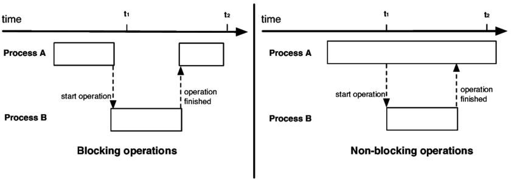
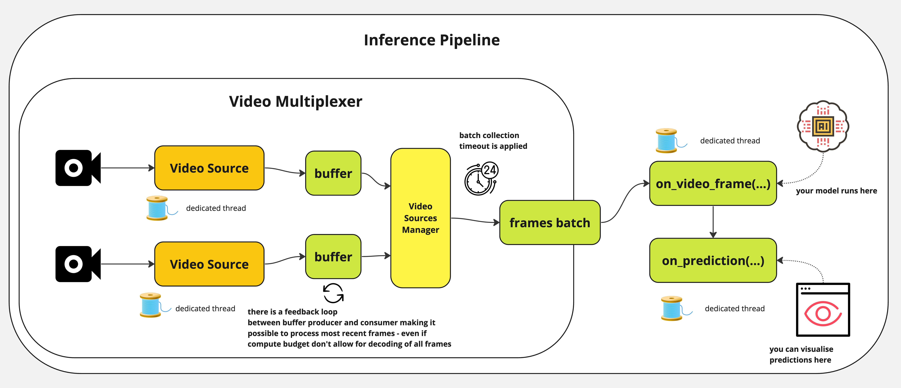
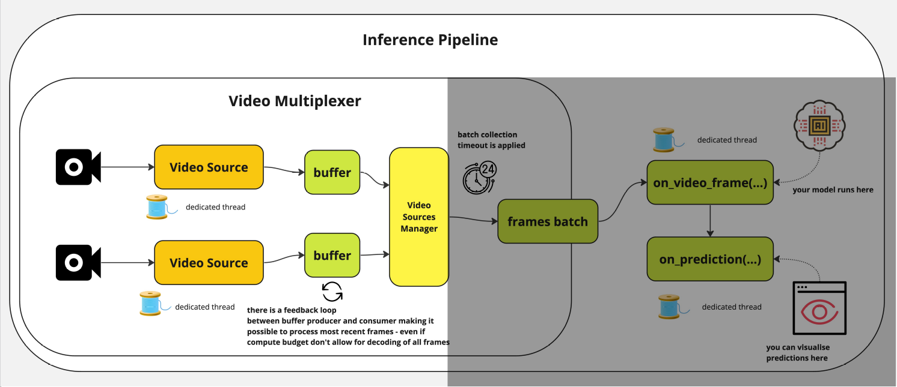
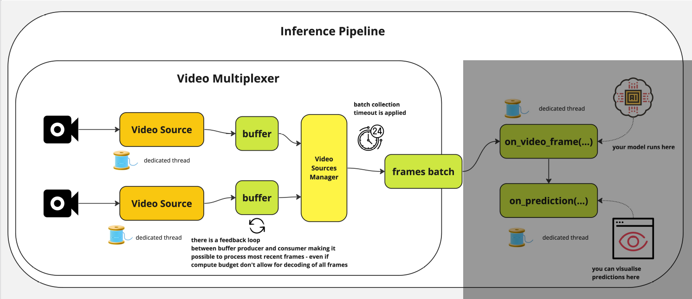
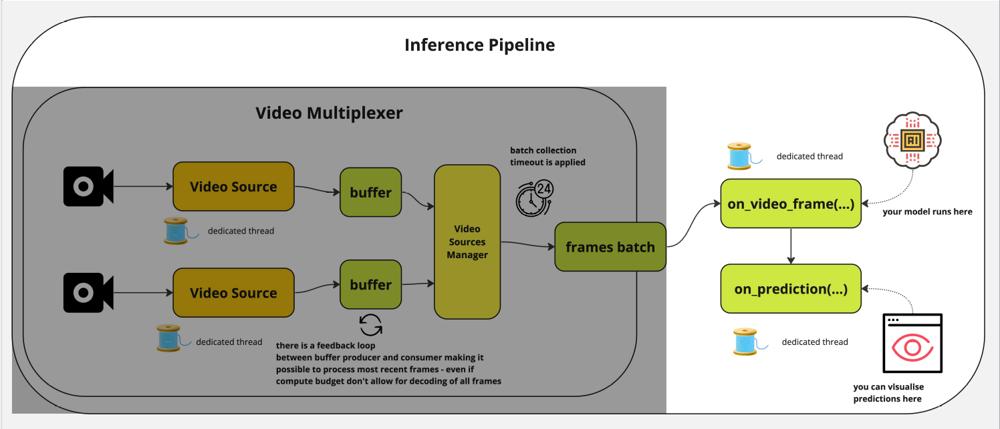

RTSP is the standard control protocol for live IP camera feeds.
You will usually meet it in:
The important point for ML: live streams do not behave like a folder of images or a short local video file.
If you write a plain while loop with cv2, video reading and model inference block each other; decoding waits on inference, and inference waits on decoding.

Blocking I/O and compute make a live feed lag.
In a real deployment, the goal is usually freshness, not perfect replay.
This is why live inference needs buffering, frame dropping policy, and reconnect logic.
The Roboflow Inference Pipeline is built for streaming sources and asynchronous execution.
You choose the source when creating the pipeline:
0 for a webcamFor a live camera use case, the RTSP input is the most common production setup.
The middle stage answers: what should happen to each frame?
model_id to run a pre-trained or fine-tuned Roboflow modelinit_with_workflow() for multi-step pipelinesExamples of custom logic:
A sink decides what to do with each prediction after inference finishes.
The sink is where “model output” becomes “application behavior.”
Input
webcam, file, URL, RTSP, or many streams
Processing
model, workflow, or custom callable
Output
render, save, broadcast, alert, or log
The Inference Pipeline works like this:
video source → frame batches → inference → sink
Your model object usually loads weights once and exposes one inference method.
Why this shape works:
VideoFrame objects, not bare arraysThe sink may receive one prediction or many, depending on the mode.
This small normalization step gives you one consistent loop:
Live streams are messy, so the sink must tolerate missing items.
Key idea:
None is not exceptional herestart() spins up the background workersjoin() keeps the script alive until processing is doneThe pipeline spins up a consumer thread for each video source, multiplexes frames, and handles synchronization.

Overview of the Inference Pipeline architecture.

Each source gets its own consumer thread.
For live sources, the buffer strategy matters more than raw throughput.
In most real-time monitoring systems, the second option is the better trade-off:
the newest frame is usually more valuable than the oldest unprocessed frame.

Frames are grouped into batches with a timeout.
batch_collection_timeout.None so later stages stay aligned.This lets multi-source processing stay synchronized without waiting forever.

Inference and sink handling run on separate threads.
on_video_frame(...) runs the model on a dedicated processing thread.on_prediction(...) performs downstream work on a separate thread.The sink can run in:
SEQUENTIAL mode: one item at a timeBATCH mode: many items togetherIt solves the three big production problems from the start:
None padding reduce hard failuresThis is the difference between a demo script and a stream-ready pipeline.
Before wiring a live video pipeline, ask:
These design choices determine latency, resilience, and operator experience.
Choose init_with_custom_logic() when:
Supervision is the library used for post-processing, which is done in the on_prediction(...) function.
See the links below for detailed tutorials: